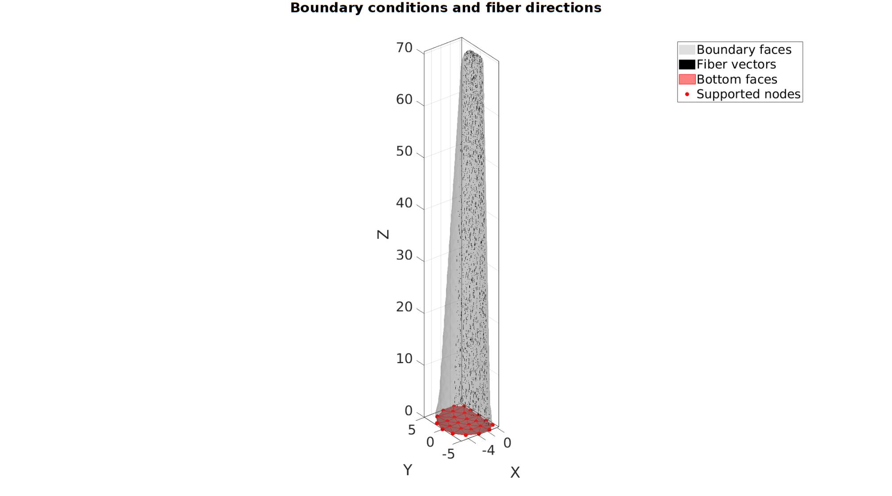

DEMO_febio_0045_tentacle_active_contraction_01.m
- Creating geometry for a basic tentacle model
- Assigning fiber directions
- Defining the boundary conditions
- Coding the febio structure
- Running the model
- Importing and visualizing results
Contents
- Keywords
- Control parameters
- Creating a loft feature
- Tetrahedral meshing using tetgen (see also runTetGen)
- Visualizing mesh using meshView, see also anim8
- Split into two materials
- Joining node sets
- Define contact surfaces
- Defining the FEBio input structure
- Quick viewing of the FEBio input file structure
- Exporting the FEBio input file
- Running the FEBio analysis
- Import FEBio results
Keywords
- febio_spec version 2.5
- febio, FEBio
- pressure loading
- tetrahedral elements,
- tetgen
- static, solid
- hyperelastic, Ogden
- displacement logfile
- stress logfile
clear; close all; clc;
Plot settings
figColor='w'; figColorDef='white'; fontSize=25; markerSize1=25; lineWidth1=3; faceAlpha=0.5; faceAlpha2=0.25; vectorPlotSize=0.5; markerSize=25;
Control parameters
% Path names defaultFolder = fileparts(fileparts(mfilename('fullpath'))); savePath=fullfile(defaultFolder,'data','temp'); % Defining file names febioFebFileNamePart='tempModel'; febioFebFileName=fullfile(savePath,[febioFebFileNamePart,'.feb']); %FEB file name febioLogFileName=fullfile(savePath,[febioFebFileNamePart,'.txt']); %FEBio log file name febioLogFileName_disp=[febioFebFileNamePart,'_disp_out.txt']; %Log file name for exporting displacement %Material parameter set c1=1e-3; %Shear-modulus-like parameter m1=8; %Material parameter setting degree of non-linearity ksi=c1*100; %Fiber "modulus" beta=3; %Fiber "nonlinearity" parameter k_factor=1e2; %Bulk modulus factor k=0.5.*(c1+ksi)*k_factor; %Bulk modulus T0=500e-3; %Active stress formulationType=1; %1=uncoupled, 2=coupled c1p=100e-3; %Shear-modulus-like parameter m1p=8; %Material parameter setting degree of non-linearity k_factor=1e2; %Bulk modulus factor kp=c1p*k_factor; %Bulk modulus % FEA control settings numTimeSteps=100; %Number of time steps desired max_refs=30; %Max reforms max_ups=0; %Set to zero to use full-Newton iterations opt_iter=15; %Optimum number of iterations max_retries=5; %Maximum number of retires dtmin=(1/numTimeSteps)/100; %Minimum time step size dtmax=(1/numTimeSteps); %Maximum time step size sampleHeight=70; % Bar barRadius=9; barLocation=15; %Contact parameters contactPenalty=40; laugon=0; minaug=1; maxaug=10; fric_coeff=0.99;
Creating a loft feature
% Sketching profile 1 ns=15; t=linspace(0,2*pi,ns); t=t(1:end-1); r1=5; x=r1*cos(t); y=r1*sin(t); z=zeros(size(x)); V_bottom=[x(:) y(:) z(:)]; V_bottom(x>(r1/2))=(r1/2); % V_bottom=evenlySampleCurve(V_bottom,ns,'pchip',1); V_bottom(:,1)=V_bottom(:,1)-max(V_bottom(:,1)); % Sketching profile 2 t=linspace(0,2*pi,ns); t=t(1:end-1); r2=2; x=r2*cos(t); y=r2*sin(t); z=zeros(size(x)); V_top=[x(:) y(:) z(:)]; V_top(x>(r2/2))=(r2/2); V_top(:,3)=V_top(:,3)+sampleHeight; % V_top=evenlySampleCurve(V_top,ns,'pchip',1); V_top(:,1)=V_top(:,1)-max(V_top(:,1)); % Create loft % cPar.numSteps=17; cPar.closeLoopOpt=1; cPar.patchType='tri'; [F,V]=polyLoftLinear(V_bottom,V_top,cPar); pointSpacing=mean(patchEdgeLengths(F,V))/2; [Ft,Vt]=regionTriMesh2D({V_top(:,[1 2])},pointSpacing,0,0); Vt(:,3)=mean(V_top(:,3)); [Fb,Vb]=regionTriMesh2D({V_bottom(:,[1 2])},pointSpacing,0,0); Fb=fliplr(Fb); Vb(:,3)=mean(V_bottom(:,3)); [F,V,C]=joinElementSets({F,Ft,Fb},{V,Vt,Vb}); [F,V]=mergeVertices(F,V); L=V(:,1)>-eps(0); indRigid=F(C==3,:); cPar.Method='HC'; cPar.n=10; cPar.RigidConstraints=unique(indRigid); [V]=patchSmooth(F,V,[],cPar);
Plotting results
cFigure; hold on; title('The lofted feature','FontSize',fontSize); gpatch(F,V,C,'k',1); % patchNormPlot(F,V); plotV(V(L,:),'r.','MarkerSize',50); icolorbar; axisGeom(gca,fontSize); camlight headlight; drawnow;

Tetrahedral meshing using tetgen (see also runTetGen)
% Create tetgen input structure inputStruct.stringOpt='-pq1.2AaY'; inputStruct.Faces=F; inputStruct.Nodes=V; inputStruct.holePoints=[]; inputStruct.faceBoundaryMarker=C; %Face boundary markers inputStruct.regionPoints=getInnerPoint(F,V); %region points inputStruct.regionA=2*tetVolMeanEst(F,V); inputStruct.minRegionMarker=2; %Minimum region marker % Mesh model using tetrahedral elements using tetGen [meshOutput]=runTetGen(inputStruct); %Run tetGen % Access model element and patch data Fb=meshOutput.facesBoundary; Cb=meshOutput.boundaryMarker; V=meshOutput.nodes; CE=meshOutput.elementMaterialID; E=meshOutput.elements;
%%%%%%%%%%%%%%%%%%%%%%%%%%%%%%%%%%%%%%%%%%%%% --- TETGEN Tetrahedral meshing --- 04-Jun-2019 13:21:43 %%%%%%%%%%%%%%%%%%%%%%%%%%%%%%%%%%%%%%%%%%%%% --- Writing SMESH file --- 04-Jun-2019 13:21:43 ----> Adding node field ----> Adding facet field ----> Adding holes specification ----> Adding region specification --- Done --- 04-Jun-2019 13:21:43 --- Running TetGen to mesh input boundary--- 04-Jun-2019 13:21:43 Opening /mnt/data/MATLAB/GIBBON/data/temp/temp.smesh. Delaunizing vertices... Delaunay seconds: 0.005909 Creating surface mesh ... Surface mesh seconds: 0.00123 Recovering boundaries... Boundary recovery seconds: 0.001874 Removing exterior tetrahedra ... Spreading region attributes. Exterior tets removal seconds: 0.000929 Recovering Delaunayness... Delaunay recovery seconds: 0.000818 Refining mesh... Refinement seconds: 0.012375 Optimizing mesh... Optimization seconds: 0.001033 Writing /mnt/data/MATLAB/GIBBON/data/temp/temp.1.node. Writing /mnt/data/MATLAB/GIBBON/data/temp/temp.1.ele. Writing /mnt/data/MATLAB/GIBBON/data/temp/temp.1.face. Writing /mnt/data/MATLAB/GIBBON/data/temp/temp.1.edge. Output seconds: 0.013798 Total running seconds: 0.038082 Statistics: Input points: 805 Input facets: 1606 Input segments: 2409 Input holes: 0 Input regions: 1 Mesh points: 1402 Mesh tetrahedra: 5988 Mesh faces: 12779 Mesh faces on exterior boundary: 1606 Mesh faces on input facets: 1606 Mesh edges on input segments: 2409 Steiner points inside domain: 597 --- Done --- 04-Jun-2019 13:21:44 %%%%%%%%%%%%%%%%%%%%%%%%%%%%%%%%%%%%%%%%%%%%% --- Importing TetGen files --- 04-Jun-2019 13:21:44 --- Done --- 04-Jun-2019 13:21:44
Visualizing mesh using meshView, see also anim8
meshView(meshOutput);

Split into two materials
[VE]=patchCentre(E,V); %Compute element centre coordinates
logicActive=VE(:,1)>=-r2;
E=[E(logicActive,:); E(~logicActive,:)];
%Define fibers as going from one face center to the other v_fib=[0 0 1]; V_fib=v_fib(ones(size(E,1),1),:); [a,d]=vectorOrthogonalPair(V_fib); %Get orthogonal vector pair %Get boundary directions faces to set-up support F_bottom=Fb(Cb==3,:); %The faces at the bottom bcSupportList=unique(F_bottom(:)); %The node list for the bottom nodes
Visualize boundary conditions
cFigure; hold on; gtitle('Boundary conditions and fiber directions',fontSize); hl(1)=gpatch(Fb,V,'kw','none',0.25); hl(2)=quiverVec(VE,V_fib,vectorPlotSize,'k'); % quiverVec(VE,a,vectorPlotSize/2,'kw'); % quiverVec(VE,d,vectorPlotSize/2,'kw'); hl(3)=gpatch(F_bottom,V,'rw','r',1); hl(4)=plotV(V(bcSupportList,:),'r.','MarkerSize',markerSize); legend(hl,{'Boundary faces','Fiber vectors','Bottom faces','Supported nodes'}); axisGeom(gca,fontSize); camlight headlight; drawnow; clear hl;

w=4*r1; %Width measure pointSpacing=mean(patchEdgeLengths(Fb,V)); optionStruct.cylRadius=barRadius; optionStruct.numRadial=round((2*pi*barRadius)/(pointSpacing/2)); optionStruct.cylHeight=w/2; % optionStruct.numHeight=optionStruct.numRadial; optionStruct.meshType='tri'; optionStruct.closeOpt=0; [Fc,Vc]=patchcylinder(optionStruct); Fc=fliplr(Fc); Vc=Vc(:,[1 3 2]); % %Shift bar Vc(:,1)=Vc(:,1)+barRadius+0.1*pointSpacing; Vc(:,3)=Vc(:,3)+barLocation; center_of_mass=mean(Vc,1);
cFigure; hold on; gtitle('Boundary conditions and fiber directions',fontSize); gpatch(Fb,V,'kw','none',0.25); gpatch(Fc,Vc,'rw','k',1); patchNormPlot(Fc,Vc); axisGeom(gca,fontSize); camlight headlight; drawnow;


Joining node sets
Fc=Fc+size(V,1); %Fixed element indices V=[V;Vc;]; %Combined node sets
Define contact surfaces
% The rigid master surface of the sphere F_contact_master=Fc; % The deformable slave surface of the slab F_contact_slave=fliplr(Fb); % Plotting surface models cFigure; hold on; title('Contact sets and normal directions','FontSize',fontSize); gpatch(Fb,V,'kw','none',faceAlpha2); hl(1)=gpatch(F_contact_master,V,'gw','k',1); patchNormPlot(F_contact_master,V); hl(2)=gpatch(F_contact_slave,V,'bw','k',1); patchNormPlot(F_contact_slave,V); legend(hl,{'Master','Slave'}); axisGeom(gca,fontSize); camlight headlight; drawnow;

Defining the FEBio input structure
See also febioStructTemplate and febioStruct2xml and the FEBio user manual.
%Get a template with default settings [febio_spec]=febioStructTemplate; %febio_spec version febio_spec.ATTR.version='2.5'; %Module section febio_spec.Module.ATTR.type='solid'; %Control section febio_spec.Control.analysis.ATTR.type='static'; febio_spec.Control.time_steps=numTimeSteps; febio_spec.Control.step_size=1/numTimeSteps; febio_spec.Control.time_stepper.dtmin=dtmin; febio_spec.Control.time_stepper.dtmax=dtmax; febio_spec.Control.time_stepper.max_retries=max_retries; febio_spec.Control.time_stepper.opt_iter=opt_iter; febio_spec.Control.max_refs=max_refs; febio_spec.Control.max_ups=max_ups; %Material section febio_spec.Material.material{1}.ATTR.type='solid mixture'; febio_spec.Material.material{1}.ATTR.id=1; febio_spec.Material.material{1}.mat_axis.ATTR.type='user'; switch formulationType case 1 %The gound matrix febio_spec.Material.material{1}.solid{1}.ATTR.type='Ogden'; febio_spec.Material.material{1}.solid{1}.c1=c1; febio_spec.Material.material{1}.solid{1}.m1=m1; febio_spec.Material.material{1}.solid{1}.c2=c1; febio_spec.Material.material{1}.solid{1}.m2=-m1; febio_spec.Material.material{1}.solid{1}.k=k; %The passive fiber component febio_spec.Material.material{1}.solid{2}.ATTR.type='fiber-exp-pow-uncoupled'; febio_spec.Material.material{1}.solid{2}.ksi=ksi; febio_spec.Material.material{1}.solid{2}.alpha=1e-20; febio_spec.Material.material{1}.solid{2}.beta=beta; febio_spec.Material.material{1}.solid{2}.theta=0; febio_spec.Material.material{1}.solid{2}.phi=0; febio_spec.Material.material{1}.solid{2}.k=k; %The active fiber component febio_spec.Material.material{1}.solid{3}.ATTR.type='uncoupled prescribed uniaxial active contraction'; febio_spec.Material.material{1}.solid{3}.T0.VAL=T0; febio_spec.Material.material{1}.solid{3}.T0.ATTR.lc=1; febio_spec.Material.material{1}.solid{3}.theta=0; febio_spec.Material.material{1}.solid{3}.phi=0; case 2 %The gound matrix febio_spec.Material.material{1}.solid{1}.ATTR.type='Ogden unconstrained'; febio_spec.Material.material{1}.solid{1}.c1=c1; febio_spec.Material.material{1}.solid{1}.m1=m1; febio_spec.Material.material{1}.solid{1}.c2=c1; febio_spec.Material.material{1}.solid{1}.m2=-m1; febio_spec.Material.material{1}.solid{1}.cp=k; %The passive fiber component febio_spec.Material.material{1}.solid{2}.ATTR.type='fiber-exp-pow'; febio_spec.Material.material{1}.solid{2}.ksi=ksi; febio_spec.Material.material{1}.solid{2}.alpha=1e-20; febio_spec.Material.material{1}.solid{2}.beta=beta; febio_spec.Material.material{1}.solid{2}.theta=0; febio_spec.Material.material{1}.solid{2}.phi=0; febio_spec.Material.material{1}.solid{2}.k=k; %The active fiber component febio_spec.Material.material{1}.solid{3}.ATTR.type='prescribed uniaxial active contraction'; febio_spec.Material.material{1}.solid{3}.T0.VAL=T0; febio_spec.Material.material{1}.solid{3}.T0.ATTR.lc=1; febio_spec.Material.material{1}.solid{3}.theta=0; febio_spec.Material.material{1}.solid{3}.phi=0; end %The passive material febio_spec.Material.material{2}.ATTR.type='Ogden'; febio_spec.Material.material{2}.ATTR.id=2; febio_spec.Material.material{2}.c1=c1p; febio_spec.Material.material{2}.m1=m1p; febio_spec.Material.material{2}.c2=c1p; febio_spec.Material.material{2}.m2=-m1p; febio_spec.Material.material{2}.k=kp; febio_spec.Material.material{3}.ATTR.type='rigid body'; febio_spec.Material.material{3}.ATTR.id=3; febio_spec.Material.material{3}.density=1e-9; febio_spec.Material.material{3}.center_of_mass=mean(Vc,1); %Geometry section % -> Nodes febio_spec.Geometry.Nodes{1}.ATTR.name='nodeSet_all'; %The node set name febio_spec.Geometry.Nodes{1}.node.ATTR.id=(1:size(V,1))'; %The node id's febio_spec.Geometry.Nodes{1}.node.VAL=V; %The nodel coordinates % -> Elements febio_spec.Geometry.Elements{1}.ATTR.type='tet4'; %Element type of this set febio_spec.Geometry.Elements{1}.ATTR.mat=1; %material index for this set febio_spec.Geometry.Elements{1}.ATTR.name='Active'; %Name of the element set febio_spec.Geometry.Elements{1}.elem.ATTR.id=(1:1:nnz(logicActive))'; %Element id's febio_spec.Geometry.Elements{1}.elem.VAL=E(1:nnz(logicActive),:); febio_spec.Geometry.Elements{2}.ATTR.type='tet4'; %Element type of this set febio_spec.Geometry.Elements{2}.ATTR.mat=2; %material index for this set febio_spec.Geometry.Elements{2}.ATTR.name='Passive'; %Name of the element set febio_spec.Geometry.Elements{2}.elem.ATTR.id=(nnz(logicActive)+1:1:size(E,1))'; %Element id's febio_spec.Geometry.Elements{2}.elem.VAL=E(nnz(logicActive)+1:end,:); % -> NodeSets febio_spec.Geometry.NodeSet{1}.ATTR.name='bcSupportList'; febio_spec.Geometry.NodeSet{1}.node.ATTR.id=bcSupportList(:); % -> Surfaces febio_spec.Geometry.Surface{1}.ATTR.name='contact_master'; febio_spec.Geometry.Surface{1}.tri3.ATTR.lid=(1:1:size(F_contact_master,1))'; febio_spec.Geometry.Surface{1}.tri3.VAL=F_contact_master; febio_spec.Geometry.Surface{2}.ATTR.name='contact_slave'; febio_spec.Geometry.Surface{2}.tri3.ATTR.lid=(1:1:size(F_contact_slave,1))'; febio_spec.Geometry.Surface{2}.tri3.VAL=F_contact_slave; % -> Surface pairs febio_spec.Geometry.SurfacePair{1}.ATTR.name='Contact1'; febio_spec.Geometry.SurfacePair{1}.master.ATTR.surface=febio_spec.Geometry.Surface{1}.ATTR.name; febio_spec.Geometry.SurfacePair{1}.slave.ATTR.surface=febio_spec.Geometry.Surface{2}.ATTR.name; % -> ElementSets febio_spec.Geometry.ElementSet{1}.ATTR.name='elementSetTransiso'; febio_spec.Geometry.ElementSet{1}.elem.ATTR.id=(1:size(E,1))'; %MeshData section % -> ElementData febio_spec.MeshData.ElementData{1}.ATTR.elem_set=febio_spec.Geometry.ElementSet{1}.ATTR.name; febio_spec.MeshData.ElementData{1}.ATTR.var='mat_axis'; for q=1:1:size(E,1) febio_spec.MeshData.ElementData{1}.elem{q}.ATTR.lid=q; febio_spec.MeshData.ElementData{1}.elem{q}.a=a(q,:); febio_spec.MeshData.ElementData{1}.elem{q}.d=d(q,:); end %Boundary condition section % -> Fix boundary conditions febio_spec.Boundary.fix{1}.ATTR.bc='x'; febio_spec.Boundary.fix{1}.ATTR.node_set=febio_spec.Geometry.NodeSet{1}.ATTR.name; febio_spec.Boundary.fix{2}.ATTR.bc='y'; febio_spec.Boundary.fix{2}.ATTR.node_set=febio_spec.Geometry.NodeSet{1}.ATTR.name; febio_spec.Boundary.fix{3}.ATTR.bc='z'; febio_spec.Boundary.fix{3}.ATTR.node_set=febio_spec.Geometry.NodeSet{1}.ATTR.name; % -> Prescribed boundary conditions on the rigid body febio_spec.Boundary.rigid_body{1}.ATTR.mat=3; febio_spec.Boundary.rigid_body{1}.fixed{1}.ATTR.bc='x'; febio_spec.Boundary.rigid_body{1}.fixed{2}.ATTR.bc='y'; febio_spec.Boundary.rigid_body{1}.fixed{3}.ATTR.bc='z'; febio_spec.Boundary.rigid_body{1}.fixed{4}.ATTR.bc='Rx'; febio_spec.Boundary.rigid_body{1}.fixed{5}.ATTR.bc='Ry'; febio_spec.Boundary.rigid_body{1}.fixed{6}.ATTR.bc='Rz'; %Contact section febio_spec.Contact.contact{1}.ATTR.surface_pair=febio_spec.Geometry.SurfacePair{1}.ATTR.name; febio_spec.Contact.contact{1}.ATTR.type='sliding-elastic'; febio_spec.Contact.contact{1}.two_pass=1; febio_spec.Contact.contact{1}.laugon=laugon; febio_spec.Contact.contact{1}.tolerance=0.2; febio_spec.Contact.contact{1}.gaptol=0; febio_spec.Contact.contact{1}.minaug=minaug; febio_spec.Contact.contact{1}.maxaug=maxaug; febio_spec.Contact.contact{1}.search_tol=0.01; febio_spec.Contact.contact{1}.search_radius=0.1; febio_spec.Contact.contact{1}.symmetric_stiffness=0; febio_spec.Contact.contact{1}.auto_penalty=1; febio_spec.Contact.contact{1}.penalty=contactPenalty; febio_spec.Contact.contact{1}.fric_coeff=fric_coeff; %LoadData section febio_spec.LoadData.loadcurve{1}.ATTR.id=1; febio_spec.LoadData.loadcurve{1}.ATTR.type='linear'; febio_spec.LoadData.loadcurve{1}.point.VAL=[0 0; 1 1]; %Output section % -> log file febio_spec.Output.logfile.ATTR.file=febioLogFileName; febio_spec.Output.logfile.node_data{1}.ATTR.file=febioLogFileName_disp; febio_spec.Output.logfile.node_data{1}.ATTR.data='ux;uy;uz'; febio_spec.Output.logfile.node_data{1}.ATTR.delim=','; febio_spec.Output.logfile.node_data{1}.VAL=1:size(V,1);
Quick viewing of the FEBio input file structure
The febView function can be used to view the xml structure in a MATLAB figure window.
febView(febio_spec); %Viewing the febio file
Exporting the FEBio input file
Exporting the febio_spec structure to an FEBio input file is done using the febioStruct2xml function.
febioStruct2xml(febio_spec,febioFebFileName); %Exporting to file and domNode
Running the FEBio analysis
To run the analysis defined by the created FEBio input file the runMonitorFEBio function is used. The input for this function is a structure defining job settings e.g. the FEBio input file name. The optional output runFlag informs the user if the analysis was run succesfully.
febioAnalysis.run_filename=febioFebFileName; %The input file name febioAnalysis.run_logname=febioLogFileName; %The name for the log file febioAnalysis.disp_on=1; %Display information on the command window febioAnalysis.disp_log_on=1; %Display convergence information in the command window febioAnalysis.runMode='external';%'internal'; febioAnalysis.t_check=0.25; %Time for checking log file (dont set too small) febioAnalysis.maxtpi=1e99; %Max analysis time febioAnalysis.maxLogCheckTime=3; %Max log file checking time [runFlag]=runMonitorFEBio(febioAnalysis);%START FEBio NOW!!!!!!!!
%%%%%%%%%%%%%%%%%%%%%%%%%%%%%%%%%%%%%%%%%%%%% --- STARTING FEBIO JOB --- 04-Jun-2019 13:22:01 Waiting for log file... Proceeding to check log file...04-Jun-2019 13:22:02 ------- converged at time : 0.00333333 ------- converged at time : 0.00745356 ------- converged at time : 0.0108732 ------- converged at time : 0.013555 ------- converged at time : 0.0165097 ------- converged at time : 0.0194189 ------- converged at time : 0.0223038 ------- converged at time : 0.0258937 ------- converged at time : 0.0299536 ------- converged at time : 0.0343269 ------- converged at time : 0.0398256 ------- converged at time : 0.045037 ------- converged at time : 0.0500862 ------- converged at time : 0.0561255 ------- converged at time : 0.0629569 ------- converged at time : 0.0704221 ------- converged at time : 0.0783125 ------- converged at time : 0.0866248 ------- converged at time : 0.0952746 ------- converged at time : 0.104194 ------- converged at time : 0.11333 ------- converged at time : 0.122639 ------- converged at time : 0.132086 ------- converged at time : 0.141644 ------- converged at time : 0.15129 ------- converged at time : 0.161007 ------- converged at time : 0.17078 ------- converged at time : 0.180599 ------- converged at time : 0.190454 ------- converged at time : 0.200338 ------- converged at time : 0.210245 ------- converged at time : 0.220171 ------- converged at time : 0.230111 ------- converged at time : 0.240064 ------- converged at time : 0.250026 ------- converged at time : 0.259996 ------- converged at time : 0.269971 ------- converged at time : 0.279952 ------- converged at time : 0.289936 ------- converged at time : 0.299924 ------- converged at time : 0.309914 ------- converged at time : 0.319906 ------- converged at time : 0.329899 ------- converged at time : 0.339894 ------- converged at time : 0.34989 ------- converged at time : 0.359887 ------- converged at time : 0.369884 ------- converged at time : 0.379882 ------- converged at time : 0.389881 ------- converged at time : 0.399879 ------- converged at time : 0.409878 ------- converged at time : 0.419877 ------- converged at time : 0.429877 ------- converged at time : 0.439876 ------- converged at time : 0.449876 ------- converged at time : 0.459875 ------- converged at time : 0.469875 ------- converged at time : 0.479875 ------- converged at time : 0.489875 ------- converged at time : 0.499875 ------- converged at time : 0.509874 ------- converged at time : 0.519874 ------- converged at time : 0.529874 ------- converged at time : 0.539874 ------- converged at time : 0.549874 ------- converged at time : 0.559874 ------- converged at time : 0.569874 ------- converged at time : 0.579874 ------- converged at time : 0.589874 ------- converged at time : 0.599874 ------- converged at time : 0.609874 ------- converged at time : 0.619874 ------- converged at time : 0.629874 ------- converged at time : 0.639874 ------- converged at time : 0.649874 ------- converged at time : 0.659874 ------- converged at time : 0.669874 ------- converged at time : 0.679874 ------- converged at time : 0.689874 ------- converged at time : 0.699874 ------- converged at time : 0.709874 ------- converged at time : 0.719874 ------- converged at time : 0.729874 ------- converged at time : 0.739874 ------- converged at time : 0.749874 ------- converged at time : 0.759874 ------- converged at time : 0.769874 ------- converged at time : 0.779874 ------- converged at time : 0.789874 ------- converged at time : 0.799874 ------- converged at time : 0.809874 ------- converged at time : 0.819874 ------- converged at time : 0.829874 ------- converged at time : 0.839874 ------- converged at time : 0.849874 ------- converged at time : 0.859874 ------- converged at time : 0.869874 ------- converged at time : 0.879874 ------- converged at time : 0.889874 ------- converged at time : 0.899874 ------- converged at time : 0.909874 ------- converged at time : 0.919874 ------- converged at time : 0.929874 ------- converged at time : 0.939874 ------- converged at time : 0.949874 ------- converged at time : 0.959874 ------- converged at time : 0.969874 ------- converged at time : 0.979874 ------- converged at time : 0.989874 ------- converged at time : 0.999874 ------- converged at time : 1 --- Done --- 04-Jun-2019 13:23:40

Import FEBio results
if runFlag==1 %i.e. a succesful run
% Importing nodal displacements from a log file [time_mat, N_disp_mat,~]=importFEBio_logfile(fullfile(savePath,febioLogFileName_disp)); %Nodal displacements time_mat=[0; time_mat(:)]; %Time N_disp_mat=N_disp_mat(:,2:end,:); sizImport=size(N_disp_mat); sizImport(3)=sizImport(3)+1; N_disp_mat_n=zeros(sizImport); N_disp_mat_n(:,:,2:end)=N_disp_mat; N_disp_mat=N_disp_mat_n; DN=N_disp_mat(:,:,end); DN_magnitude=sqrt(sum(DN(:,3).^2,2)); V_def=V+DN; [CF]=vertexToFaceMeasure(Fb,DN_magnitude); V_DEF=N_disp_mat+repmat(V,[1 1 size(N_disp_mat,3)]); X_DEF=V_DEF(:,1,:); Y_DEF=V_DEF(:,2,:); Z_DEF=V_DEF(:,3,:);
Plotting the simulated results using anim8 to visualize and animate deformations
% Create basic view and store graphics handle to initiate animation hf=cFigure; %Open figure gtitle([febioFebFileNamePart,': Press play to animate']); hp=gpatch(Fb,V_def,CF,'k',1); %Add graphics object to animate gpatch(Fc,V,'kw','none',1); %Add graphics object to animate % gpatch(Fb,V,0.5*ones(1,3),'none',0.25); %A static graphics object axisGeom(gca,fontSize); colormap(gjet(250)); colorbar; caxis([0 max(DN_magnitude)]); axis([min(X_DEF(:)) max(X_DEF(:)) min(Y_DEF(:)) max(Y_DEF(:)) min(Z_DEF(:)) max(Z_DEF(:))]); camlight headlight; % Set up animation features animStruct.Time=time_mat; %The time vector for qt=1:1:size(N_disp_mat,3) %Loop over time increments DN=N_disp_mat(:,:,qt); %Current displacement DN_magnitude=sqrt(sum(DN.^2,2)); %Current displacement magnitude V_def=V+DN; %Current nodal coordinates [CF]=vertexToFaceMeasure(Fb,DN_magnitude); %Current color data to use %Set entries in animation structure animStruct.Handles{qt}=[hp hp]; %Handles of objects to animate animStruct.Props{qt}={'Vertices','CData'}; %Properties of objects to animate animStruct.Set{qt}={V_def,CF}; %Property values for to set in order to animate end anim8(hf,animStruct); %Initiate animation feature drawnow;

end

GIBBON www.gibboncode.org
Kevin Mattheus Moerman, gibbon.toolbox@gmail.com
GIBBON footer text
License: https://github.com/gibbonCode/GIBBON/blob/master/LICENSE
GIBBON: The Geometry and Image-based Bioengineering add-On. A toolbox for image segmentation, image-based modeling, meshing, and finite element analysis.
Copyright (C) 2019 Kevin Mattheus Moerman
This program is free software: you can redistribute it and/or modify it under the terms of the GNU General Public License as published by the Free Software Foundation, either version 3 of the License, or (at your option) any later version.
This program is distributed in the hope that it will be useful, but WITHOUT ANY WARRANTY; without even the implied warranty of MERCHANTABILITY or FITNESS FOR A PARTICULAR PURPOSE. See the GNU General Public License for more details.
You should have received a copy of the GNU General Public License along with this program. If not, see http://www.gnu.org/licenses/.